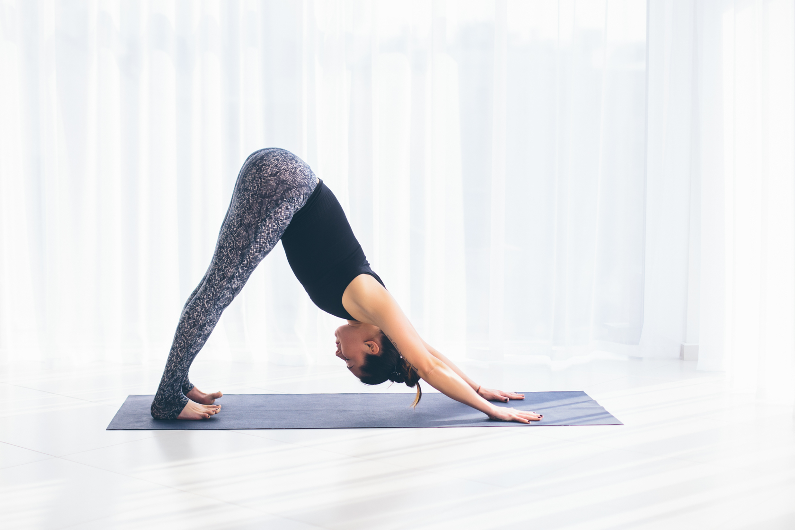

Польза йоги:
Эта эффективная и веками проверенная практика воздействует сразу на
физическое и тонкое тело (оно отвечает за эмоции и мысли человека). Тот, кто занимается йогой,
становится здоровее и выносливее, после занятий чувствует прилив сил,
с новой силой может ощутить вкус к жизни. Также йога замедляет процессы старения, развивает
группы мышц и гибкость, избавляет от болей в спине, убирает искривления позвоночника.
Противопоказания для занятия йогой:
Гипертоническая болезнь, эпилепсия, врожденный порок сердца, желче-каменная
болезнь, алкогольное или наркотическое опьянение, период принятия транквилизаторов,
антидепрессантов и других психотропных препаратов.
Заниматься йогой в домашних условиях - легко и просто
Конечно, лучше всего, если вы начнете изучать упражнения йоги не в домашних
условиях, а с преподавателем или более опытным практиком. Во-первых, это дисциплинирует.
Во-вторых, вас поправят, если вы делаете что-то не так. Ну а в-третьих,
занятия в группе самые эффективные. Но если у вас нет пока такой возможности, вы можете освоить
йогу самостоятельно.
Что еще важно знать перед тем, как вы начнете.
1. Йога - это комплекс упражнений (асан), как правило, в определенной
последовательности. Завершает занятие поза покоя - шавасана: в ней ваше тело должно быть
абсолютно неподвижным в течение 10-15 минут. Этого времени достаточно,
чтобы организм максимально расслабился и отдохнул, а головной мозг перегрузился.
2. Во время домашних занятий йогой вы не должны испытывать боль. Вообще
никакую! Не надо специально растягивать мышцы (это не спорт!), с силой нагибаться, тянуть
ноги - и при этом терпеть. Новичкам тем более. Вы только начали работать
с телом, дайте ему время, и уже вскоре увидите, как станете более гибкими. Учитесь слушать
свое тело. Если возникли любые неприятные ощущения - ослабьте усилие либо аккуратно выходите
из асаны.
3. Перед началом лучше сделать небольшую разминку, чтобы разогреть
мышцы.
4. Дышите ровно и спокойно. Контролируйте свое дыхание: не должно быть
задержек, вдохи и выходы делайте как можно глубже и медленнее. Это очень важно.
5. Заниматься йогой можно только на голодный желудок. Идеально утром,
после пробуждения и холодного душа. Либо в течение дня, но чтобы после завтрака или обеда
прошло 3-4 часа.
6. Перед занятием проветрите комнату, можно на пару секунд зажечь
палочку с благовонием или развести в воде 2-3 капли любимого эфирного масла, этого будет
достаточно, чтобы освежить воздух. Пол должен быть чистым. Так приятнее
заниматься. Хотя - кому как нравится.
7. Девушкам во время месячных рекомендуется не использовать
перевернутые позы (стойку на плечах, позу плуга). В первые три дня не делать упражнения на
пресс и активное дыхание животом (дыхание огня). Так как все это может усилить
кровотечение. Но если вас это не смущает, то можете продолжить эти практики - делайте
медленнее и меньше по времени.
Комплекс простых упражнений для занятий дома:
Поза скалы (Тадасана)
Встаньте прямо, соедините стопы вместе. Подтяните колени, живот, ягодицы.
Почувствуйте, как вытягивается позвоночник. Полностью расправьте грудную клетку, плечи опустите
вниз. Следите за взглядом, он должен быть устремлен строго вперед.
Руки расположите вдоль туловища, стремитесь пальцами вниз.
Поза ребенка (Баласана)
Асана для отдыха между сложными упражнениями. Встаньте на колени, ноги
вместе. Сядьте ягодицами на пятки. Опустите корпус на бедра, расслабленные руки протяните вдоль
туловища, ладони у стоп. Полностью расслабьте плечи, дайте им опуститься
к полу.
Вытянутая поза (Уттанасана)
Встаньте в тадасану. Подтянув мышцы живота, с прямой спиной наклонитесь
вперед на 90°. Затем наклонитесь еще ниже, стараясь лбом коснуться коленей. Пятки от пола не
отрывайте. Следите, чтобы сгибание происходило только в области таза.
Поза собаки мордой вниз (Адхо мукха шванасана)
Встаньте на колени так, чтобы они оказались на ширине таза. Наклонитесь,
ладони поставьте строго под плечами. Следите, чтобы между пальцами оставалось расстояние, локти
вытяните. На выдохе поднимите колени, направляя таз назад и отталкиваясь
руками от коврика. Старайтесь поставить пятки на землю, носки чуть внутрь. Подбородок
направляйте к груди, шею расслабьте. Важно стремиться к тому, чтобы вытянуть спину в одну прямую
линию. Живот не напрягайте. Для выхода согните
колени, после опустите их на пол и уложите таз на пятки.

Поза собаки мордой вверх (Урдхва мукха шванасана)
Лягте на пол, согните руки в локтях и расположите ладони под плечами. На
вдохе, выпрямляя руки, подтяните корпус, бедра и голени от пола. Прогиб в груди. Взгляд все
время направляйте вверх. Не забывайте подтягивать ягодицы, а плечи
максимально направлять вниз. Для выхода согните руки в локтях и осторожно лягте на коврик.
Поза посоха (Дандасана)
Сядьте на пол, выпрямив ноги в коленях. Носки стоп направляйте на себя.
Выпрямите руки в локтях и расположите вдоль корпуса, поставив ладони рядом с ягодицами. Втяните
живот, направьте плечи вниз, раскройте грудную клетку. Взгляд устремите
перед собой. Вытягивайте позвоночник в одну прямую линию, стремясь макушкой вверх.
Поза мертвеца (Шавасана)
Завершающая практику асана. Лягте на пол ровно и удобно, руки расположите
вдоль туловища ладонями вверх. Ноги слегка разведите. Закройте глаза. Почувствуйте полное
расслабление, постарайтесь избавиться от всех мыслей, погрузитесь в
свои ощущения.